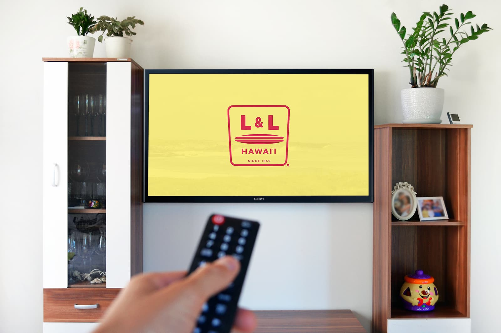
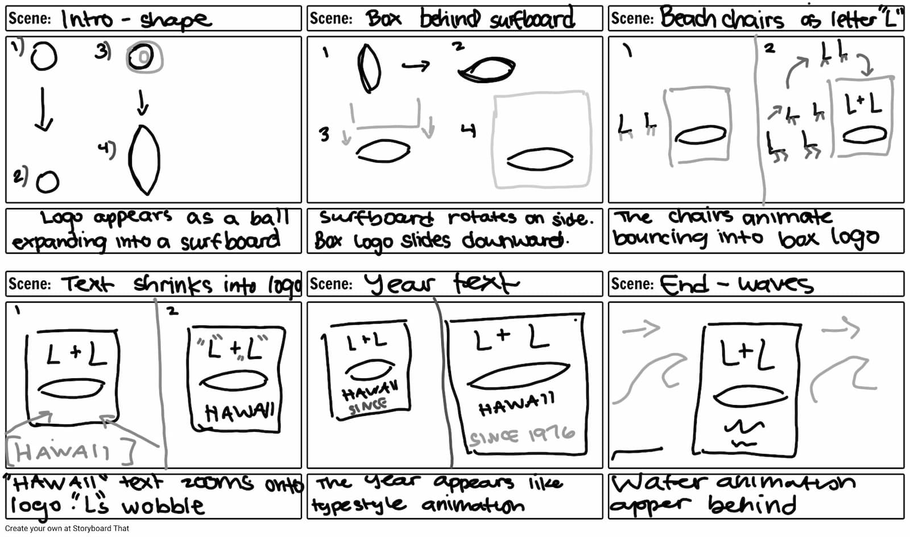
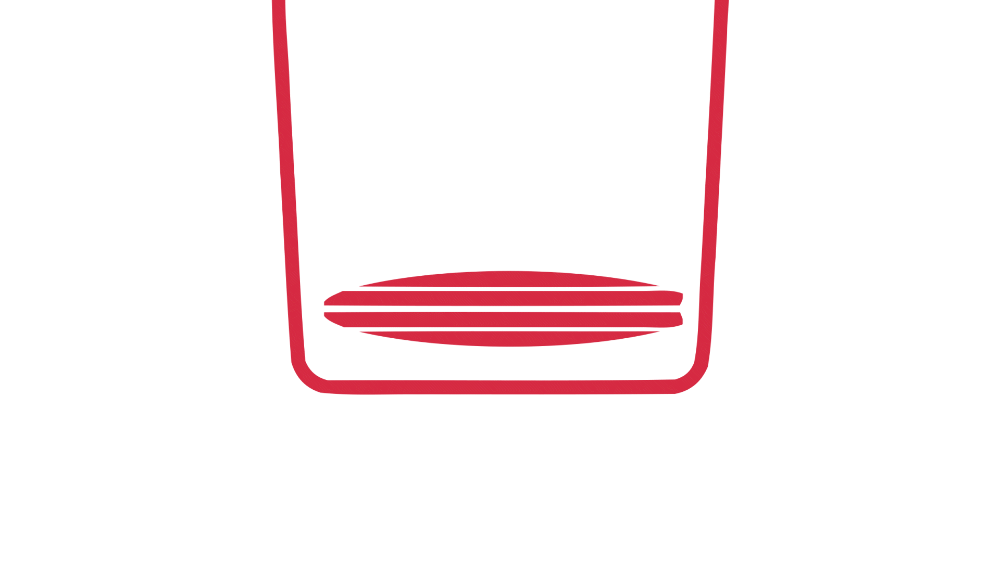
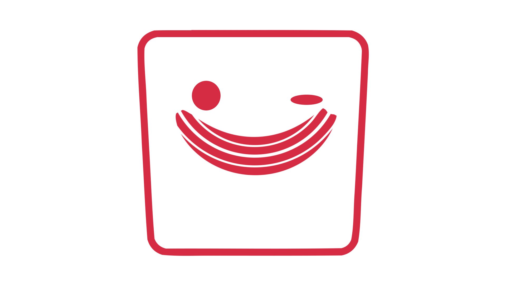
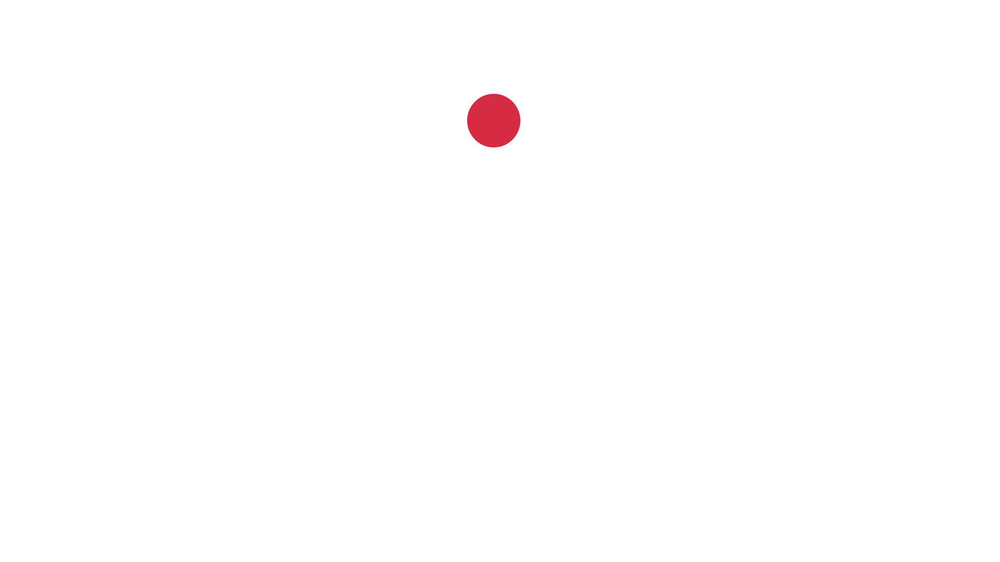

How can a simple logo like L&L be brought to life through motion without losing what makes it recognizable?

The Challenge
I created an animation that emphasizes rhythm and motion through a sequence of reveal, bounce, and secondary shape movement. Each animated moment was designed to support clarity and personality while retaining the original mark’s integrity.
The Solution
My Approach
Starting with Motion Intent
I began by defining how the logo should feel in motion — energetic, rhythmic, and expressive — while still staying true to its simple form.

Keeping Motion Purposeful
Every movement was intentional. Instead of over-animating, I focused on simple transitions that support clarity and keep the logo recognizable.
Refining the Details
Timing, easing, and spacing were adjusted to create a smooth, balanced rhythm — making the animation feel natural, responsive, and polished.



Final Thoughts
This project explores how motion can elevate a static logo into something more expressive. By keeping the animation simple and intentional, the result feels clear, engaging, and true to the brand.
